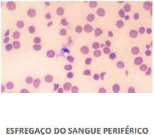
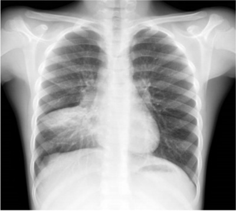

Questão 1 · Introdução à hemólise · Quadro clínico da def iciência de G6PD · 4000185271Um menino de 3 anos de idade, previamente hígido, foi levado ao pronto-socorro com quadro de palidez abrupta e queda no estado geral. Sua avó, que o acompanhava, negou uso de medicações e relatou que, nos últimos dias, encontrara a criança brincando com bolinhas de naftalina. Ao exame, constatou-se o seguinte: criança afebril, hipocorada (2+/4+) e ictérica (2+/4+); taquicardia, com ausculta respiratória e cardíaca sem alterações; e baço palpável a 1 cm do rebordo costal. Foram solicitados exames laboratoriais, os quais revelaram Hb = 6,2 mg/dL, Ht = 18,5%, reticulócitos = 9,5% e Coombs direto negativo. Assinale a alternativa que apresenta a hipótese diagnóstica nesse caso.
A doença falciforme
B esferocitose hereditária
C talassemia
D deficiência de glicose-6-fosfato desidrogenase
E anemia hemolítica autoimune
Questão 2 · Síndrome torácica aguda · 4000185215Entre as alternativas a seguir, assinale a que pacientes com anemia falciforme.
A presença de infiltrado novo em radiografia de tórax
B dor torácica
C temperatura > 38,5 ºC.
D taquipneia, tosse, estertores à ausculta
E sinais de isquemia no eletrocardiograma ou aumento de biomarcadores de necrose miocárdica
Questão 3 · Tratamento da púrpura trombocitopênica trombótica PTT · 4000184840Quadro clínico da púrpura trombocitopênica trombótica PTT Fisiopatologia da púrpura trombocitopênica trombótica PTT Mulher, 70 anos, com HAS e dislipidemia, é admitida no Setor de Emergência com história de ter sido encontrada, em casa, desorientada, sonolenta e “suja de urina”. História patológica pregressa: um episódio de ataque isquêmico transitório. Em uso regular de: ácido acetilsalicílico (AAS) 100mg; clopidogrel 75mg; atenolol 100mg e atorvastatina 20mg. Exame físico: FC = 97bpm; frequência respiratória (FR) = 24irpm; PAS = 160x95mmHg; Tax = 38,5ºC; SpO₂= 95% em ar ambiente; so no le nta; responde quando chamada, mas é pouco hipohidratada (2+/4+); movimenta os 4 membros sem perda de força; avaliação dos reflexos profundos normais. Exames laboratoriais: hemoglobina (Hb) = 9,0g/dL; hematócrito (Ht) = 29%; leucócitos = 14.000/mm³(predomínio de segmentados); plaquetas = 35.000/mm³; sódio = 145meq/L; potássio = 3,8meq/L; bicarbonato = 20meq/L; glicose = 100mg/dL; ureia = 70mg/dL; creatinina = 3,2mg/dL; bilirrubina total = 2,4mg/dL; lactato desidrogenase (LDH) = 460U/L; brinogênio = 250mg/dL; tempo de tromboplastina parcial ativado (PTTa) = 33s (valor de referência = 32s); tempo de atividade de protrombina (TAP) = 14s (valor de referência = 15s) Hematoscopia: anisopoiquilocitose; muitos esquizócitos; trombocitopenia. Pode-se afirmar que a hipótese diagnóstica mais provável e a melhor conduta inicial são:
A coagulação intravascular disseminada / hidratação generosa e iniciar antibioticoterapia.
B púrpura trombocitopênica imunológica associada ao clopidogrel / suspender o clopidogrel e iniciar corticosteroide.
C sepse bacteriana / iniciar corticosteroide e antibioticoterapia empiricamente.
D púrpura trombocitopênica trombótica associada ao clopidogrel / suspender o clopidogrel e iniciar plasmaférese.
Questão 4 · Acidente vascular encef álico · Crises álgicas · 4000184489A doença falciforme é uma das alterações genéticas mais frequentes no Brasil e faz parte de um grupo de doenças genéticas caracterizadas pela predominância da hemoglobina (Hb) S nas hemácias, sendo a anemia falciforme (Hb SS) o genótipo mais frequente. Em relação a essa patologia, assinale a alternativa correta.
A As crises álgicas são a principal causa de atendimento médico nos serviços de emergência para esses pacientes.
B A gravidade clínica é variável, mas as principais causas de morbimortalidade são resultado de hemorragias de difícil controle.
C O acidente vascular cerebral (AVC) é uma das causas de crise vaso-oclusiva com altos índices de morbimortalidade na doença falciforme, prevalecendo o AVC hemorrágico nesses pacientes.
D As infecções são frequentes na doença falciforme na infância. Elas se relacionam com a asplenia e sempre se manifestam como complicações graves.
E Não existe teste de triagem neonatal para essa patologia.
Questão 5 · Manejo das crises álgicas · Síndrome torácica aguda · 4000184066Paciente de 9 anos, sexo masculino, asmático e portador de anemia falciforme, está internado na enfermaria da pediatria devido ao quadro de exacerbação asmática, associada à infecção das vias aéreas superiores. Na admissão, apresentava sibilos difusos, saturação 92% em ar ambiente, desconforto respiratório leve/moderado, com exame de imagem normal. No segundo dia de internação hospitalar, o paciente começou a se queixar de piora da falta de ar, dor em membros inferiores e na região torácica, de forte intensidade (nota 9/10 na escala numérica de dor). Sem febre ou outros sintomas associados. Ao exame clínico, encontra-se hidratado, descorado 2+, com saturação de 92% em Venturi 50%, FC: 90 bpm, FR: 32 irpm, PA: 96x50 mmHg; apresenta desconforto moderado com ausculta mantida em relação ao último exame. Sem febre associada. Frente aos novos sintomas apresentados, qual a conduta indicada para o paciente acima?
A Iniciar opioide; reavaliar necessidade de nova dose em 30 minutos; repetir exame de imagem pulmonar.
B Iniciar analgésico simples paracetamol/dipirona; reavaliar resposta após 1–2 horas; não repetir exame de imagem pulmonar.
C Iniciar anti-inflamatório não hormonal; reavaliar resposta após 30 minutos; não repetir exame de imagem pulmonar.
D Iniciar metadona e evitar opioide; repetir exame de imagem pulmonar.
Questão 6 · Crises álgicas · Hematologia · 4000183712Acerca da anemia falciforme, assinale a alternativa correta.
A Esplenomegalia é encontrada principalmente em crianças mais velhas e em adolescentes.
B As crises dolorosas são complicações frequentes e são consequência da vaso-oclusão por hemácias falcizadas.
C A síndrome torácica aguda é tratada com antiviral e uso de broncodilatadores.
D O diagnóstico é feito na presença de hemoglobina S e A.
E A profilaxia para bactérias encapsuladas está indicada após a primeira crise álgica.
Questão 7 · Hidroxiureia · 4000183683Hidroxiureia será prescrita com maior probabilidade ao paciente com o seguinte histórico:
A Mulher, 40 anos, anemia crônica e HbA2 > 4%.
B Mulher, 24 anos, necrose asséptica de cabeça femural e síndrome torácica aguda.
C Homem, 35 anos, pancitopenia, DHL elevado e hipersegmentação de neutrófilos.
D Mulher, 30 anos, poliartite, proteinúria e anticorpo anti-Sm.
E Homem, 65 anos, fratura vértebra lombar L2 e hipergamaglobulinemia.
Questão 8 · Síndrome Hemolítico Urêmica SHU · 4000183478Lactente feminino de 18 meses é internado com queixa principal de anemia súbita. Sua genitora refere que a palidez surgiu há cerca de 2 dias. A criança apresentou diarreia sanguinolenta há 6 dias, com leve melhora nos últimos dias. Foi relatada também diminuição da diurese há 24 horas. Ao exame clínico, chamou a atenção do pediatra: palidez +++/++++, desidratação, ausência de febre e frequência respiratória de 56 incursões por minuto. Exames laboratoriais na admissão hospitalar: - Hemoglobina = 6,0 g/dL; elevado número de esquizócitos; contagem de plaquetas = 35.000/mm³ ; teste de Coombs negativo; ureia = 156 mg/dL; creatinina = 2,4 mg/dL - Sumário de urina com hematúria e leucocitúria Diante dos dados acima, analise as assertivas: I. Há uma forte suspeita de tratar-se de um quadro sindrômico grave conhecido como microangiopatia trombótica. II. O provável diagnóstico da lactente é de síndrome hemolíticourêmica, tendo, como principal agente desencadeador, a toxina Shiga produzida pela III. Outros achados laboratoriais podem ser encontrados nesse caso, como hipercalemia, hiperfosfatemia e acidose metabólica. Assinale a alternativa
A Todas as assertivas estão corretas.
B Todas as assertivas estão incorretas.
C Apenas a assertiva I está correta.
D A assertiva II está incorreta.
E Apenas a assertiva II está correta.
Questão 9 · Pediatria · Crise aplásica · 4000183252Uma criança de três anos de idade, do sexo masculino, com antecedente de anemia falciforme, deu entrada no pronto socorro infantil, com quadro de palidez e fraqueza havia 48 horas. Seu acompanhante negou que a criança tivesse apresentado febre. O exame físico indicou o seguinte: descorado; hipoativo; frequência cardíaca de 130 b p m ; normotenso e eupneico; MV presente bilateralmente, sem ruídos adventícios; abdome ácido, indolor, sem visceromegalias. O resultado de exames laboratoriais foi o seguinte: Hb = 5,5 g/dL (Hb basal = 8,5 g/dL); leucócitos = 6.500/mm³; plaquetas = 200 mil; PCR = 0,5 mg/dL; reticulócitos diminuídos. Com relação ao caso clínico acima, assinale a alternativa correta.
A O tratamento consiste na estabilização hemodinâmica até a elevação dos reticulócitos.
B A administração de imunoglobulina é o tratamento de primeira escolha.
C A transfusão de hemácias não está indicada; estaria apenas se Hb < 5,0 g/dL.
D A principal causa do quadro em questão é a infecção pelo enterovírus 71.
E Trata-se de uma anemia hemolítica com necessidade de transfusão de hemácias.
Questão 10 · Osteomielite · 4000183122Adolescente, portadora de doença falciforme Hb SC, está internada há 5 dias, com dor intensa na perna esquerda, com di culdade para deambular, com pouca resposta a opióde e febril desde o segundo dia de internação, sem foco evidente ao exame físico. Ultrassonogra a mostrou abaulamento periosteal em tíbia. Quais são os agentes etiológicos mais prováveis?
A Klebsiella sp
B Staphylococcus aureus
C Streptococcus pneumoniae
D Staphylococcus aureus
Questão 11 · Introdução à hemólise · 4000182923Mulher de 24 anos apresenta cansaço, fraqueza e taquicardia aos mínimos esforços há 2 dias. EF: FC 110 bpm, FR 18 ipm, PA 100/60mmHg, mucosas descoradas, baço palpável sobre o rebordo costal direito, aftas orais. Exames laboratoriais: Hb 5,7 g/dL, Ht 22%, VCM 108 fL, plaquetas 212.000/mm³, GB 4.800/mm³ com diferenciais normais, reticulócitos 5,6%, BT 4,5 mg/dL, BI 3,8 mg/dL, DHL 4 vezes o valor de normalidade, Cr 0,6 mg/dL. O exame que auxiliará no diagnóstico é a(o)
A teste da antiglobulina direta.
B imunofenotipagem de sangue periférico.
C dosagem de vitamina B12.
D eletroforese de hemoglobina.
Questão 12 · Pediatria · Tratamento da síndrome hemolítico urêmica SHU · 4000182309Menino de 7 anos é levado pelo responsável ao pronto socorro infantil com queixa de febre alta há cinco dias, associada à diarreia com presença de sangue, sem muco ou pus. Os exames complementares revelam anemia hemolítica grave, plaquetopenia, aumento de ureia e creatinina e isolamento da bactéria Sobre o tratamento indicado para esta doença, é correto afirmar que a:
A prescrição de antibióticos é contraindicada, pois pode aumentar a liberação de toxina
B despeito da plaquetopenia, está indicada a prescrição de anticoagulação terapêutica
C transfusão de hemácias está contraindicada pelo risco de sobrecarga volêmica
D maioria dos pacientes necessita de suporte dialítico na fase aguda
Questão 13 · Crise de sequestro esplênico · 4000182103Criança de 2 anos, com anemia falciforme, é levada pelos pais ao pronto socorro com queixa de dor abdominal importante e em membros. Mãe refere que criança iniciou com tosse, coriza e febre há 2 dias e refere que hemoglobina basal da criança geralmente ca em torno de 8 g/dL. Ao exame: prostrada, palidez importante, febril, ictérica. Frequência cardíaca 180 bpm, frequência respiratória 30 ipm, saturação de oxigênio 96%, PA 80 x 50 mmHg. Fígado a 2 cm do rebordo costal direito a baço a 8 cm do rebordo costal esquerdo. Exames laboratoriais: Hb 2,9 g/dL; Ht 11% VCM 78; HCM 21,8; plaquetas 68 mil/ul; GB 14 mil/ul (3% bastonetes); contagem de reticulócitos: 17,43% (VR: 0,5 - 2,1%); bilirrubinas: total 2 mg/dL; direta 0,4 mg/dL; LDH: 1827 U/L(VR: 85 - 227 U/L). Diante deste cenário, qual é a hipótese diagnóstica?
A Anemia aplástica.
B Crise vaso oclusiva.
C Sequestro esplênico.
D Síndrome torácica aguda.
Revisar: possível letra faltando em enunciado
Questão 14 · Quadro clínico da síndrome hemolítico urêmica SHU · 4000181711Menina de 3 anos de idade é atendida no setor de emergência com quadro de hematúria aguda, sendo relatado pela mãe que a criança apresentou dor abdominal e diarreia sanguinolenta há 6 dias. A criança evoluiu com anemia hemolítica microangiopática e lesão renal aguda, sem sinais meníngeos ou alterações pulmonares. Dentre os seguintes achados laboratoriais, os mais prováveis de serem encontrados são:
A desidrogenase láctica aumentada e plaquetas normais.
B presença de esquizócitos e reticulócitos normais.
C Coombs direto positivo e bilirrubina indireta aumentada.
D Coombs direto negativo e plaquetas diminuídas.
Questão 15 · Quadro clínico da anemia f alcif orme · Pediatria · 4000177551João tem 1 ano e acordou com as mãos com edema e dolorosas. Sua mãe não observou exposição a nenhuma substância ou alimento estranhos no dia anterior. Ao ser atendido no pronto-socorro, fez exames que mostraram: Hemograma com Ht 7.0 %, VCM 80 fl, Leucócitos 13.500/mm³, Plaquetas 550.000/mm³, reticulocitos 6 %. Diante desse caso, o diagnóstico é
A anemia falciforme.
B esferocitose.
C talassemia.
D hemoglobinopatia C.
Questão 16 · Herança genética das hemoglobinopatias S · Dactilite f alcêmica · 4000170607Uma lactente com seis meses de vida foi levada ao pronto-atendimento, com história de edema, calor e dor em tornozelos, pés, punhos e mãos há doze horas. Sua mãe nega febre e relata que o irmão de cinco anos de idade faz uso de hidroxiureia. Com base nesse caso hipotético, assinale a alternativa que apresenta o exame que deverá ser solicitado para a confirmação diagnóstica.
A hemograma
B reticulócitos
C eletroforese de hemoglobinas
D PCR e VHS
E imunofenotipagem
Questão 17 · Diagnóstico das anemias hemolíticas autoimunes AHAI · Introdução à hemólise · 4000168346Paciente feminina, de 21 anos, veio à consulta queixando-se de cansaço. Os exames laboratoriais solicitados indicaram hemoglobina de 9,6 g/dl, aumento dos níveis de RDW (índice de anisocitose) e Coombs positivo de 3+/4. Qual dos achados laboratoriais abaixo é esperado nesse quadro?
A Reticulocitose.
B Leucócitos fragmentados.
C Microcitose.
D Capacidade ferropéxica aumentada.
Questão 19 · COVID 19 · Síndrome torácica aguda · Pediatria · 4000166152Um menino de sete anos de idade, portador de anemia falciforme, foi levado ao serviço de emergência com queixa de tosse há cinco dias e febre. Refere dor torácica, que não melhora com dipirona, há dois dias. Ao exame físico, está taquidispneico, descorado, hidratado, com boa perfusão periférica e saturando 94% em ar ambiente. Apresenta tiragem subcostal e intercostal e estertores crepitantes bilaterais. A radiogra a de tórax mostrou in ltrado pulmonar bilateral difuso. Reação em cadeia de polimerase (PCR) para covid-19 positiva. Com base nesse caso hipotético, assinale a alternativa correta.
A Não se configura o diagnóstico de síndrome torácica aguda, pois não há presença de hipoxemia.
B Está indicado um soro endovenoso de manutenção, com volume 30% acima da necessidade basal pela regra de Holliday-Segar.
C A transfusão simples de concentrado de hemácias está indicada, independentemente do nível de hemoglobina.
D Existe evidência clara de benefício com a espirometria de incentivo.
E A administração de opioide está contraindicada, pelo risco de depressão respiratória.
Questão 20 · Crise de sequestro esplênico · 4000164980Menina, 2 anos, portadora de doença falciforme e sem história de internações prévias, apresenta quadro de febre seguida de dor abdominal difusa de início súbito há cerca de 3 horas. Exame físico: fácies de dor; palidez; taquicardia; taquipneia; temperatura axilar = 39,1oC; peristalse presente; dor difusa à palpação super cial e profunda do abdome com maior intensidade no quadrante superior esquerdo; baço palpável na altura da cicatriz umbilical. O diagnóstico mais provável e a conduta mais adequada, respectivamente, são:
A sequestro esplênico / internação; monitorização hemodinâmica; solicitação de hemograma, reticulócitos e amostra de sangue para possível hemotransfusão
B crise álgica / analgesia parenteral; observação na emergência e, caso haja melhora, alta com analgesia oral e orientação de retorno em 48horas
C crise aplásica / internação; solicitação de hemograma, reticulócitos e amostra de sangue para possível hemotransfusão
D síndrome torácica aguda com repercussão abdominal / solicitação de radiografia de tórax; manejo ambulatorial com antibióticos de amplo espectro; orientação de retorno em 36 horas
Questão 21 · Tratamento da síndrome hemolítico urêmica SHU · Quadro clínico da síndrome hemolítico urêmica SHU · 4000164306Criança eutró ca, da raça negra, com 9 meses de idade e quadro de diarreia com sangue há 5 dias. Está fazendo uso de ceftriaxona IM há 4 dias. Mãe refere que apesar da melhora da diarreia a criança está urinando menos, com edema palpebral discreto e está mais irritada há 1 dia. Exame físico: criança hidratada, pálida +++/4+; edema palpebral bilateral, FR 40 ipm FC 140 bpm, 2 bulhas rítmicas e normofonéticas com sopro sistólico suave, PA 120 x 80 mmHg. Exames colhidos no pronto socorro. Hemograma: Hb 6,0 g/dL, Ht 17,9 %, GB 18.500 e plaquetas 75.000. Reticulocitose. Ureia 70 e creatinina 2,5 mg/DI. Urina tipo 1: densidade 1,012; pH 5,5; proteinuria ++, leucócitos 10 por campo e hemácias 15 por campo de grande aumento. Com relação a anemia, qual o tratamento mais indicado nesse momento?
A Eritropoetina subcutânea.
B Reposição de ferro.
C Corticoterapia.
D Concentrado de hemácias.
Revisar: possível letra faltando em enunciado
Questão 22 · Crise de sequestro esplênico · 4000146052Menino, 2 anos de idade, com diagnóstico de anemia falciforme, no prontosocorro trazido por seu pai, com queixa há 1 dia de palidez, aumento do volume abdominal e diminuição de diurese. Ao exame clínico: regular estado geral, descorado 3+/4+, mucosas desidratadas, anictérico, afebril, sonolento, sem linfonodomegalias. Ausculta cardíaca com bulhas taquicárdicas, com sopro sistólico de 3+/6+. Tempo de enchimento capilar = 4 segundos. Ausculta respiratória sem alterações, com taquipneia, saturação de O₂ = 93%, em ar ambiente. Abdome: baço palpável a 6cm do rebordo costal esquerdo (pai refere que normalmente baço ca há 2cm do rebordo costal). Sem edemas e sem lesão de pele. Solicitados exames reproduzidos a seguir: Qual é o diagnóstico que explica os dados clínicos observados nesta criança?

A Síndrome hemofagocítica
B Aplasia medular
C Crise vaso oclusiva
D Sequestro esplênico
Revisar: possível letra faltando em enunciado
Questão 23 · Quadro clínico da anemia f alcif orme · Introdução à anemia f alcif orme · 4000146051Renata está na primeira consulta com pediatra da UBS. Evoluindo bem, com ganho de peso de 20 g/dia, boa aceitação de leite materno, sem alterações no exame clínico, sem queixas gastrointestinais. A mãe traz o Teste do Pezinho, cujo resultado na triagem de hemoglobinopatias é: presença de hemoglobinas F e S. Qual é o diagnóstico identi cado no exame ?
A Beta Talassemia
B Traço falciforme
C Doença falciforme
D Deficiência de G6PD
Revisar: possível letra faltando em enunciado
Questão 24 · Síndrome torácica aguda · Suporte transf usional na anemia f alcif orme · Pediatria · 4000145905Uma paciente de sete anos de idade, com antecedente de anemia falciforme, em uso regular de ácido fólico, hidroxiureia e penicilina benzatina, tem quadro de dor torácica há três dias, com discreta melhora com o uso de anti-inflamatório, e febre de até 38,8 °C. Ao exame, regular estado geral, descorada, afebril, ictérica 1+/4, alerta, com MV presente bilateralmente, com crepitação, sopro tubário e broncofonia aumentada em todo o hemitórax direito, FR de 38 ipm, sat. de O2 de 91% em ar ambiente, BRNF em dois tempos, sem sopros, FC de 142 bpm, PA de 90 x 50 mmHg, abdome globoso, ácido e pouco dolorido à palpação de hipocôndrio direito, sem visceromegalias, e boa perfusão periférica. Hb 6 g/dL, Ht 19%, leucócitos 28.600/mm3 (7% bastonetes, 85% segmentados, 5% linfócitos e 3% monócitos), plaquetas 373.000/mm³, PCR 6,1 e reticulócitos 18%. Realizou a radiografia de tórax mostrada a seguir. Com base nessa situação hipotética, assinale a alternativa que apresenta, correta e respectivamente, o diagnóstico mais provável e a conduta a ser adotada para a paciente.

A pneumonia com derrame pleural; analgesia, oxacilina e ceftriaxone, sem transfusão de concentrado de hemácias
B síndrome torácica aguda; analgesia, ceftriaxone, claritromicina e transfusão de concentrado de hemácias
C pneumonia com atelectasia; ceftriaxone e ventilação não invasiva, sem transfusão de concentrado de hemácias
D embolia gordurosa maciça; analgesia, anticoagulação e concentrado de hemácias
E síndrome torácica aguda; analgesia, ceftriaxone e claritromicina, sem transfusão de concentrado de hemácias
Questão 25 · Síndrome torácica aguda · Pediatria · 4000145695Paciente, 9 anos, pardo, dá entrada no pronto atendimento com história de febre há três dias e tosse. Há 24 horas, apresenta dor torácica. Relata várias internações devido a crises dolorosas. Ao exame físico, encontra-se em regular estado geral, hipocorado ++/4+, hidratado, acianótico, ictérico +/4+. Frequência cardíaca = 110 batimentos por minuto, frequência respiratória = 30 incursões por minuto, pressão arterial = 90x60mmHg, ritmo cardíaco regular em dois tempos, sem sopros. Abdome ácido à palpação, indolor, sem visceromegalias. Restante do exame físico sem alterações. Caderneta de vacinação em dia. Com relação a esse quadro, assinale a afirmativa correta
A O
B A síndrome torácica aguda é uma hipótese diagnóstica e o paciente deve ser internado.
C O paciente deve receber a prescrição de amoxicilina, via oral, por 10 dias.
D O paciente deve receber a prescrição de cefuroxime, via oral, por 10 dias.
E A saturaçâo de oxigênio deve ser mantida acima de 87%.
Questão 26 · Hematologia · Crise aplásica · 4000145565Qual a afirmativa CORRETA em relação a crise aplástica que pode ocorrer em uma criança com anemia falciforme?
A Apesar de a recuperação ser espontânea, a criança deve ser internada, pois não há como prever até que valor a queda da hemoglobina vai atingir
B Geralmente tende a recorrer com frequência
C Geralmente é desencadeado por intercorrência infecciosa bacteriana
D Leucócitos e plaquetas geralmente se encontram diminuídos
Questão 27 · Tratamento da esf erocitose hereditária · 4000144896Paciente de 12 anos encaminhado pela hematologia com esferocitose para avaliação da clínica cirúrgica. Qual dos procedimentos abaixo está indicado para a cura dos pacientes com essa doença:
A Colecistectomia;
B Esplenectomia;
C Transplante de medula óssea;
D Timectomia;
E Pancreatectomia.
Questão 28 · Classif icação das anemias hemolíticas quanto à sua relação com as hemácias · 4000144547Sobre as patologias com defeito etiológico observado no eritrócito, correlacione a primeira e a segunda colunas. ( 1 ) Alteração enzimática. ( 2) Alteração da membrana do eritrócito. ( 3) Alteração numérica quantitativa da cadeia de Hb. ( 4) Alteração qualitativa de cadeía de Hb. () Doença falciforme. () De ciência de G6PD. () Talassemia. () Esferocitose Hereditária. Assinale a alternativa que representa a sequencia correta
A 1 - 2 - 3 - 4
B 4 - 3 - 1 - 2
C 3 - 1 - 4 - 2
D 4 - 1 - 3 - 2
Questão 29 · Traço f alcêmico · 4000144546O traço falcêmico apresenta
A Anemia leve.
B Esplenomegalia discreta.
C Dores ósseas leves.
D Hemograma normal.
Questão 30 · Tratamento da púrpura trombocitopênica trombótica PTT · Hematologia · 4000144254Mulher, 40 anos, encaminhada devido a febre, confusão mental e petéquias. Informa quadro de diarreia e faringite há 03 meses, com resolução espontânea. Hemograma: Hb: 7,0 g/dl, Ht: 20%, VCM: 92 fL, leucócitos: 8.000/ul, plaquetas: 9.000/ul (esfregaço do sangue periférico abaixo), contagem de reticulócitos: 140.000/ul (VR: 30.000-95.000), creatinina: 1,1 mg/dl (VR: <1,3), ureia: 36 mg/dl (VR < 37). Qual é o tratamento mais adequado?

A Plasmaférese.
B Transfusão de plaquetas.
C Prednisona e lmunoglobulina.
D Eculizumabe.
Questão 31 · Hidroxiureia · 4000144146Adolescente, sexo masculino, 17 anos de idade, procedente de zona rural, procura atendimento médico pela primeira vez, queixando-se de dores ósseas e astenia, desde a infância. Refere ainda dispneia aos esforços, dores abdominais esporádicas em hipocôndrio direito e duas internações prévias por pneumonia. Ao exame físico, descorado ++/4, ictérico ++/4, PA: 120x65mmHg, FC: 100bpm. À ausculta, apresenta ritmo cardíaco regular, bulhas normofonéticas, com sopro sistólico panfocal. Fígado palpável a 4cm do rebordo costal direito e espaço de Traube livre. Há ainda uma úlcera rasa em maléolo direito. Diante do caso apresentado, Identifique o tratamento farmacológico mais adequado para a principal hipótese diagnóstica:
A Sulfato ferroso.
B Anfotericina B.
C Hidroxiureia.
D Complexo B e ácido fólico.
Questão 32 · Quadro clínico da anemia f alcif orme · 4000144145Adolescente, sexo masculino, 17 anos de idade, procedente de zona rural, procura atendimento médico pela primeira vez, queixando-se de dores ósseas e astenia, desde a infância. Refere ainda dispneia aos esforços, dores abdominais esporádicas em hipocôndrio direito e duas internações prévias por pneumonia. Ao exame físico, descorado ++/4, ictérico ++/4, PA: 120x65mmHg, FC: 100bpm. À ausculta, apresenta ritmo cardíaco regular, bulhas normofonéticas, com sopro sistólico panfocal. Fígado palpável a 4cm do rebordo costal direito e espaço de Traube livre. Há ainda uma úlcera rasa em maléolo direito. Diante do caso apresentado, Identifique o exame padrão-ouro para o diagnóstico da principal hipótese diagnóstica:
A Biópsia de medula óssea.
B Mielograma.
C Eletroforese de hemoglobina.
D Biópsia hepática.
Questão 33 · Introdução à hemólise · Hemoglobinúria paroxística noturna HPN · 4000143974Paciente de 22 anos apresenta diagnóstico de anemia crônica há cerca de três anos e chega para a consulta a m de melhor investigação do quadro. Refere que por vezes apresenta episódios de exacerbação da anemia, acompanhados de cefaleia, dor abdominal, lombalgia, febre e astenia. Relata também que durante os episódios sua urina ca escurecida pela manhã. Nos exames trazidos, apresenta além da anemia, hemoglobunúria, plaquetopenia. O diagnóstico mais provável é de:
A Esferocitose hereditária.
B Hemoglobinúria paroxística noturna.
C Anemia falciforme.
D Talassemia.
Revisar: possível letra faltando em enunciado
Questão 34 · Síndrome torácica aguda · 4000143710Adolescente, 10 anos portador de anemia falciforme é atendido em uma unidade de emergência com quadro de febre elevada há 24h e sintomas gripais. Durante o período em que permanece na unidade em observação apresenta dor torácica e queda na saturação de hemoglobina (90%). Ausculta pulmonar: diminuída de forma discreta à esquerda. FC: normal. A hipótese diagnóstica e a conduta mais provável para esse quadro são:
A Embolia pulmonar aguda/ Internação, anticoagulação com dose plena de heparina.
B Embolia pulmonar aguda / Internação, anticoagulação com dose profilática de heparina.
C Síndrome torácica aguda / Observação por 24h, analgesia, evitar a transfusão de hemácias.
D Síndrome torácica aguda / Internação, analgesia, antibioticoterapia, e transfusão de hemácias.
E Síndrome coronariana aguda / AAS, anticoagulação plena, evitar transfusão de hemácias.
Questão 35 · Quadro clínico da púrpura trombocitopênica trombótica PTT · Esquizócitos · 4000142637Mulher, 32 anos, em investigação de trombocitopenia de surgimento recente, associada à elevação de escórias nitrogenadas. Hemograma: leucometria e hemoglobina em níveis normais. A visualização de hemácias fragmentadas (esquizócitos) na lâmina de sangue periférico sugere a hipótese diagnóstica, mais provável, de:
A trombocitopenia pós infecciosa
B púrpura trombocitopênica trombótica
C leucemia mielocítica aguda
D trombocitopenia induzida por drogas
Questão 36 · Anemias hemolíticas autoimunes AHAI · 4000142575Leia o caso clínico a seguir. Paciente de 32 anos, com lúpus eritematoso sistêmico, dá entrada no pronto-socorro com intensa dispneia e dosagem de hemoglobina de 3,1 g/dL. O teste de Coombs direto é reagente (4+/4+); é solicitada a transfusão de dois concentrados de hemácias, porém o serviço de hemoterapia informa que todos os concentrados de hemácias cruzados foram incompatíveis e a pesquisa de anticorpo irregular foi positiva. Também não foi possível definir o grupo sanguíneo ABO e Rh do paciente. A conduta recomendada para este paciente é:
A iniciar corticoide e suspender a transfusão.
B realizar uma plasmaférese de urgência para retirar o autoanticorpo.
C transfundir, lentamente, concentrado de hemácias O Rh negativo, mesmo incompatível.
D continuar cruzando bolsas de concentrados de hemácias até encontrar alguma que seja compatível.
Questão 37 · Fisiopatologia da anemia f alcif orme · 4000141921Menina, 8 anos de idade, negra, encaminhada para avaliação no ambulatório de referência com história de anemia crônica. A acompanhante (tia) relata que a menor queixa-se de cansaço fácil e dor em membros inferiores, frequentemente. Refere anorexia. Não sabe informar sobre quadro semelhante em familiares. Ao exame está em regular estado geral, ativa, hidratada, eupnéica, afebril, sem alterações em dados vitais; Peso: 24Kg; com mucosas descoradas ++/IV. Não há adenomegalias. A ausculta cardíaca apresenta sopro holossistólico II/VI, audível em focos da base. Ausculta respiratória e restante do exame segmentar sem alterações. Exames realizados há 45 dias: hematócrito: 24,6% e hemoglobina: 8,2g/dL. Indique o momento a partir do qual o exame específico pode ser realizado para o diagnóstico definitivo da causa da anemia em foco.
A Desde o nascimento.
B Após o período neonata.l
C Após o primeiro ano de vida.
D A partir de 3 meses de idade.
Questão 38 · Quadro clínico da anemia f alcif orme · 4000141920Menina, 8 anos de idade, negra, encaminhada para avaliação no ambulatório de referência com história de anemia crônica. A acompanhante (tia) relata que a menor queixa-se de cansaço fácil e dor em membros inferiores, frequentemente. Refere anorexia. Não sabe informar sobre quadro semelhante em familiares. Ao exame está em regular estado geral, ativa, hidratada, eupnéica, afebril, sem alterações em dados vitais; Peso: 24Kg; com mucosas descoradas ++/IV. Não há adenomegalias. A ausculta cardíaca apresenta sopro holossistólico II/VI, audível em focos da base. Ausculta respiratória e restante do exame segmentar sem alterações. Exames realizados há 45 dias: hematócrito: 24,6% e hemoglobina: 8,2g/dL. Indique o achado, no esfregaço de sangue periférico, que permitiria fechar o diagnóstico etiológico (e patognomônico) desse tipo de anemia.
A Ovalócitos.
B Esferócitos.
C Drepanócitos.
D Hemáceas em alvo.
Questão 39 · Hematologia · Quadro clínico da def iciência de G6PD · Diagnóstico da def iciência de G6PD · 4000141779Um paciente desenvolveu astenia, icterícia e urina escura após o início de uso de dapsona para tratamento de Hanseníase. Os exames laboratoriais demonstraram queda de 4g/l da hemoglobina em relação ao exame pré-tratamento, BT 4,0 mg/dL com bilirrubina indireta de 3,5 mg/dL. Análise mais cuidadosa do esfregaço de sangue periférico detectou a presença de “hemácias mordidas”. Qual o exame de escolha para diagnóstico dessa condição?
A Teste de Coombs direto
B Eletroforese de hemoglobina
C Pesquisa de crioaglutininas
D Dosagem de G6PD (glicose 6-fosfato desidrogenase)
E Citometria de fluxo
Questão 40 · Introdução à hemólise · 4000141260Uma paciente de 23 anos de idade, sem comorbidades conhecidas, compareceu ao pronto atendimento com queixa de astenia e de redução da capacidade de exercício e negou sangramentos. Ao exame físico, estava hipocorada 3+/4 e não havia outras alterações. Veri cam-se FC = 100 bpm, FR = 22 irpm e SatO2 = 97%. Os exames iniciais mostram hemoglobina = 7,8 g/dL, hematócrito = 22%, VCM = 98 fl, HCM = 32 pg e bilirrubinas totais = 2,0 mg/dL, sendo 1,3 indireta e 0,7 direta. Para confirmar a hipótese diagnóstica de anemia hemolítica, espera-se encontrar
A teste de Coombs direto positivo, aumento de reticulócitos e aumento da haptoglobina.
B elevação da desidrogenase láctica, aumento de reticulócitos e queda da haptoglobina.
C queda da desidrogenase láctica, aumento de reticulócitos e queda da haptoglobina.
D elevação da desidrogenase láctica, queda de reticulócitos e teste de Coombs direto positivo.
E teste de Coombs direto positivo, que, isoladamente, já é suficiente para confirmar hemólise.
Questão 41 · Hematologia · Crise de sequestro esplênico · 4000141116Homem, 24a, procura a unidade de emergência com dor intensa em anco direito, há quatro horas e muita falta de ar. Antecedente pessoal: anemia falciforme, em acompanhamento desde a infância, em uso de hidroxiureia desde os 12 anos de idade. Exame físico: Ictérico +++/4+, T=36oC FC= 97 bpm, abdome: dor à palpação de hipocôndrio direito, descompressão brusca negativa, fígado a 9 cm do RCD, doloroso à palpação, sendo impossível avaliar consistência ou forma. Hb=5 g/dL, VCM= 78 fL, reticulócitos= 25%, Leucócitos= 15.100/mm3³(65% neutró los segmentados, 10% bastonetes, 5% monócitos, 20% linfócitos), plaquetas= 350.000/mm³, AST= 48 U/L, ALT= 61 U/L, fosfatase alcalina= 229 U/L, GGT= 160 U/L, Bilirrubina direta= 6,9 mg/dL, bilirrubina indireta 1,2 mg/dL. O DIAGNÓSTICO É:
A Sequestro hepático.
B Colecistite aguda.
C Colestase intra-hepática.
D Trombose de veia porta.
Questão 42 · Suporte transf usional na anemia f alcif orme · 4000140683Menina, 8 anos de idade, portadora de anemia falciforme, foi admitida no serviço de emergência devido quadro de febre, di culdade para respirar e dor em hemitórax direito há 1 dia. Feito radiogra a de tórax com presença de consolidação segmentar em lobo inferior direito. Ao exame, paciente em regular estado geral, FC: 125 bpm, FR: 38 ipm, com tiragem subdiafragmática, intercostal e de fúrcula, saturação de 85% em ar ambiente, 92% em máscara não-reinalante. Resultados de exame com Hb: 6,8 g/dL, Ht: 18% (Hb basal de 7,5 g/dL). A paciente em questão tem história de ter apresentado anafilaxia em transfusão prévia de concentrado de hemácias. Com relação à indicação de hemocomponentes para essa paciente, qual das alternativas está correta?
A Está indicado concentrado de hemácias lavado e desleucocitado.
B Está indicado concentrado de hemácias irradiado.
C Está indicado concentrado de hemácias sem modificação, mas com pré-medicação.
D Não está indicado concentrado de hemácias neste momento.
Questão 43 · Hematologia · Transplante alogênico de medula óssea na anemia f alcif orme · 4000139893Em relação à doença falciforme em crianças, é correto afirmar:
A O uso mensal de penicilina profilática deve ser mantido até os 12 anos de idade.
B A hidroxiureia age aumentando a produção de hemoglobina F, por ativação da enzima ribonucleotídeo redutase.
C Osteonecrose, doença cerebrovascular e mais de 2 crises vaso-oclusivas graves ao ano em pacientes em uso de hidroxiureia, com mais de 16 anos, são indicações de transplante alogênico.
D A indicação de hidroxiureia ocorre em crianças acima de dois anos, com duas crises vaso-oclusivas ou uma síndrome torácica aguda em 12 meses.
E A indicação de hidroxiureia como profilaxia de complicações ocorre somente após os dois anos de idade.
Questão 44 · Anemia f alcif orme · 4000133197Em relação à Anemia Falciforme, marque V para a (s) afirmativas verdadeiras e F para a (s) falsas: ( ) A esplenomegalia geralmente está ausente nos lactentes e presente em quase a totalidade dos adolescentes com esta hemoglobinopatia. ( ) As crises álgicas são os sintomas que mais levam a busca por atendimento médico e se dão por fenômenos vaso- oclusivos principalmente em ossos e articulações. ( ) A queda da hemoglobina em relação a hemoglobina basal do paciente associada a aumento dos reticulócitos sugere a ocorrência de crise aplásica. ( ) Lactentes com febre maior que 38,5°C, mesmo sem outros sintomas concomitantes devem ser internados e iniciado antibioticoterapia dado o risco de rápida evolução para septicemia e óbito. ( ) Os pacientes estão mais susceptíveis a infecções por bactérias encapsuladas como Streptococcus pneumoniae, Haemophilus influenzae e salmonelas. Marque a alternativa
A V, V, F, F, V.
B V, F, V, F, F.
C F, V, F, V, V.
D F, F, V, V, F.
Questão 45 · Herança genética das hemoglobinopatias S · 4000128082Homem, 22 anos de idade, procura atendimento médico por alterações de exames laboratoriais de rotina. Assintomático. No interrogatório sistemático, referiu ter notado olhos amarelados, há cerca de 2 anos, por cerca de 2 dias, mas não procurou atendimento médico. Nega comorbidades. Exame físico sem alterações. Exames laboratórias com bilirrubinas totais de 2,89mg/dl, com bilirrubina indireta de 2,03mg/dl, AST 18U/l (VR 30), ALT 16U/l (VR 30), FA 55U/l (VR 100), GGt 20U/l (VR 60) AntiHCV não reagente, AntiHBs reagente, AntiHAV 1gG reagente Eletroforense de hemoglobina: HbA1 59%, HbA2 4%, HbS 37%. O risco que o lho deste paciente terá de nascer com anemia falciforme, caso a mãe possua traço falcêmico, é de:
A 0 (zero%).
B 25%
C 50%
D 100%
Questão 46 · Autoesplenectomia · 4000124389Lactente de dois anos, com anemia falciforme, chegou ao pronto-socorro com história de dor em membros inferiores, febre de 38,5°C e tosse há três dias. Ao exame físico está hipocorado ++/4+, eupneico, sem hepatoesplenomegalia, sem edema ou sinais flogísticos em membros inferiores. Raio-X de tórax normal. A conduta mais adequada para o caso é:
A Analgesia – liberar com antibiotico terapia via oral.
B Analgesia – encaminhar para reavaliação ambulatorial.
C Anti-inflamatório – liberar com antibioticoterapia via oral.
D Analgesia – internar com antibioticoterapia via parenteral.
E Analgesia - internar para transfundir.
Questão 47 · Síndrome torácica aguda · 4000120591Um paciente de dois anos de idade, com diagnóstico de anemia falciforme, foi levado pela mãe ao pronto-socorro devido a quadro de tosse, febre de 39 ºC há dois dias e taquipneia há um dia. A mãe relata antecedente de três internações no último ano, tendo recebido transfusão de concentrado de hemácias nas três ocasiões. Ao exame: regular estado geral, descorado 2+/4, desidratado, taquipneico, afebril, contactuante, com murmúrio vesicular presente bilateralmente, com estertores crepitantes em base direita, frequência respiratória de 50 ipm, saturação de oxigênio de 85% em ar ambiente, BRNF em dois tempos, com sopro sistólico 2+/6 panfocal, frequência cardíaca de 110 bpm, abdome sem alterações e boa perfusão periférica. Radiogra a de tórax mostrou condensação em base de hemitórax direito. Com base nesse caso hipotético, é correto afirmar que a melhor conduta será considerar o diagnóstico de
A síndrome torácica aguda, iniciar antibioticoterapia, hidratação e oxigênio suplementar imediatamente e, após resultados de exames, realizar transfusão se for necessário.
B fenômeno tromboembólico e iniciar anticoagulação imediata.
C de TRALI e iniciar corticoterapia e oxigênio suplementar para melhor controle da lesãopulmonar.
D aspiração de corpo estranho e solicitar broncoscopia imediatamente.
E SDRA e iniciar ventilação não invasiva com pressão positiva imediatamente.
Questão 48 · Síndrome torácica aguda · 4000120163Paciente de 5 anos de idade, com história de anemia falciforme (HbSS), é levado para atendimento médico com queixa de tosse, dor torácica e febre de 38,7 C há 1 dia. Estava assintomático havia 4 meses. Ao exame físico apresenta-se descorado moderado, anictérico, acianótico, afebril. Ausculta pulmonar: discretos sibilos bilaterais e poucos roncos. Tiragem subcostal leve. Ausculta cardíaca e propedêutica abdominal sem alterações significativas. Pulsos cheios e perfusão periférica de 2 segundos. Rx de tórax com in ltrado leve em bases bilateralmente, principalmente à direita. Gasometria arterial com saturação 90% em ar ambiente. Hemoglobina: 8,1 g/dL e Hematócrito 25,4%. Após o início de oxigenioterapia e analgesia adequada, a melhor conduta para esse paciente, dentre as abaixo, é:
A Alta hospitalar com amoxicilina oral, broncodilatador e analgesia.
B Penicilina cristalina e expansão volêmica com cristaloide.
C Vancomicina e expansão volêmica com plasma fresco congelado.
D Corticoide, oseltamivir e expansão volêmica com cristaloide.
E Ceftriaxone, claritromicina e transfusão de concentrado de hemácias.
Questão 49 · Anemias Microangiopáticas · 4000117323Anemia, plaquetopenia, aumento dos níveis de DHL e bilirrubina indireta, aumento dos reticulócitos e esquizócitos em sangue periférico são vistos em todas as entidades, EXCETO:
A Síndrome hemolítica - urêmica.
B Coagulação intravascular disseminada.
C Síndrome de Evans.
D Purpura trombocitopênica trombótica.
E Síndrome HELLP.
Questão 50 · Manejo das crises álgicas · 4000114781Homem 18 anos, com anemia falciforme, apresenta diarreia aquosa há 2 dias, sem sangue ou muco. Hoje iniciou quadro de dor em membros inferiores. Nega febre, dispneia ou outras queixas. Exame físico: desidratado +/4+, consciente e orientado, ictérico +/4+ FC: 104 bpm. PA: 120 x 80 mmHg. Ap. respiratório sem alterações, saturação de O₂ em ar ambiente 93%. Abdome: sem alterações. Extremidades: dor à palpação dos membros inferiores, sem sinais ogísticos. Exame laboratoriais: Hb: 9,8 g/dL, Ht: 30%, bilirrubina total: 4 mg/dL, bilirrubina direta: 2,1 mg/dL. Além da hidratação endovenosa, qual é a conduta inicial mais adequada?
A Morfina.
B Suplementação de oxigênio.
C Hidroxiureia.
D Concentrado de hemácias.
Questão 51 · Diagnóstico das anemias hemolíticas autoimunes AHAI · 4000113839Etiologias da anemia hemolítica autoimune AHAI por anticorpos quentes Homem de 52 anos procura assistência médica com queixas de fadiga, dispneia ao esforço e dor abdominal que é mais intensa no lado esquerdo do abdome, há cerca de um mês. Nega febre. O paciente apresenta uma história clínica de hipertensão difícil de tratar. Faz uso de enalapril, anlodipino, hidroclorotiazida e metildopa (iniciado há 3 meses). Ao exame clínico com frequência cardíaca de 106 bpm, frequência respiratória de 18 incursões/min, temperatura de 37°C, pressão arterial de 148/84 mmHg e saturação de oxigênio de 95% no ar ambiente. O paciente está descorado 3+/4+, com icterícia +/4+. O exame de tórax está normal, e o exame cardiovascular revela apenas taquicardia. O fígado é de 10cm à percussão e é palpável 1cm abaixo do rebordo costal direito. O baço é palpável 3cm abaixo do rebordo costal esquerdo, ausência de macicez móvel à percussão do abdomen. Não há edema de membros inferiores. Ao exame laboratorial, o nível de hemoglobina é de 7,5 g/L, e o hematócrito, de 23,2%. Reticulócitos estão aumentados (4%). A contagem de leucócitos é de 8.300/ mg/dL. Qual é a provável etiologia?
A Leucemia mieloide crônica.
B Anemia hemolítica autoimune.
C Linfoma de Hodgkin.
D Leishmaniose visceral.
Questão 52 · Síndrome torácica aguda · 4000112748Menino, 4 anos, há 4 dias apresenta coriza nasal e tosse com piora progressiva. Há 2 dias apresenta febre 3 vezes por dia, 38,5 ºC. Hoje está mais cansado com esforço respiratório e foi levado à emergência. AP: alteração do teste do pezinho para hemoglobinopatias (FSC) e faz seguimento em serviço de saúde. Ao exame: REG-MEG, descorado, cianose de extremidades, anictérico, afebril no momento, hidratado. Tórax com retrações intercostais e subdiafragmática. Pulmão: MV diminuído a E, com estertores crepitantes em base E. FR 45 ipm. Saturação 85%. Coração: 2 BRNF sem sopros FC 130 bpm, pulsos cheios, tempo de enchimento capilar 2 segundos, PA 90 x 50 mmHg. Abdome: semigloboso, normotenso, indolor, fígado a 2 cm do RCD, baço com a ponta palpável. SN: sem sinais meníngeos ou outras alterações. Exames laboratoriais: Hemograma - Hb 9,5 g/dl, Ht 29%, GB 15000 (bastonetes 11%, segmentados 45%, linfócitos 35%, eosinó los 5%, mono 4%). Neutró los com microvacúolos. Após posicionar via aérea, dar oxigênio e iniciar antibioticoterapia, qual seria outra conduta apropriada neste caso?

A Transfusão de concentrado de hemácias 10 ml/kg.
B Transfusão de troca (sangria + transfusão).
C Não há indicação de transfusão.
D Transfusão de concentrado de hemácias 6 ml/kg.
Questão 53 · Síndrome torácica aguda · 4000111806Adolescente masculino, 13 anos de idade, portador de anemia falciforme em seguimento regular com hematologista, apresenta queixa de febre e tosse há dois dias e dor em face anterior do tórax a direita. Ao exame clínico encontra-se em regular estado geral, levemente descorado, FC: 84 bpm, FR: 34 ipm, Saturação de Oxigênio: 95% em ar ambiente, Temp: 38°C, PA: 100/60 mmHg. Realizou radiografia de tórax, que mostrou a imagem abaixo: A conduta inicial mais adequada é:

A Prescrição de amoxacilina, alta hospitalar com reavaliação.
B Internação com ceftriaxone e claritromicina.
C Fibrinolítico endovenoso e enoxaparina dose terapêutica.
D Hiper-hidratação endovenosa e oxigenioterapia.
Questão 54 · Quadro clínico da def iciência de G6PD · 4000107988Fernanda, 4 anos, é levada à Unidade de Pronto Atendimento por sua mãe, que relata que sua lha está amarelada e cansa- se com facilidade. Há três dias iniciou tratamento para infecção urinária com ácido nalidíxico. Ao exame físico, Fernanda encontra-se descorada ++/4+, ictérica +/4, principalmente em face e tronco. Ausculta cardíaca e pulmonar normais. FC: 120 bpm, FR: 44 irpm, SatO₂: 96%, Abdome: ácido, ruídos hidroaéreos presentes, fígado no rebordo costal direito e baço palpável a 1 cm do rebordo costal esquerdo. Exames laboratoriais: Hb: 6,5 g/dL, Ht: 19,5%, reticulócitos: 9%. Dentre as abaixo, a principal hipótese diagnóstica para esse caso é
A anemia ferropriva.
B anemia falciforme.
C esferocitose.
D deficiência de G6PD.
E deficiência de piruvato quinase.
Questão 55 · Corpos de Heinz · Quadro clínico da def iciência de G6PD · 4000102302Paciente de 21 anos de idade, sexo masculino, apresenta quadro de celulite na coxa direita, iniciando o tratamento oral com trimetoprim-sulfametoxazol. Algumas horas depois, evolui com mal-estar, tontura, falta de ar, calafrios e lombalgia. Não há histórico de uso prévio de antibióticos. Exame físico: hipocorado (2+/4+), ictérico (1+/4+), eupneico e afebril. Exames séricos: hemoglobina: 9,1 g/dL, plaquetas: 330000/mm³, reticulócitos corrigidos: 15,8%; esfregaço de sangue periférico: presença de corpúsculos de Heinz. O diagnóstico mais provável é:
A deficiência de glicose-6-fosfato desidrogenase.
B desordem da membrana do eritrócito.
C hemólise autoimune.
D sepse por bactérias anaeróbias.
Questão 56 · Traço f alcêmico · Herança genética das hemoglobinopatias S · 4000093822Pais procuram o serviço de emergência de hospital pediátrico, com seu lho de 20 dias de vida, porque caram muito preocupados com o resultado do teste do pezinho que identificou a presença de Hb FAS. Qual sua hipótese diagnóstica?
A Anemia falciforme
B Traço falciforme
C S/ß
D S/ß⁰ talassemia
E Hb S associada a persistência hereditária da Hb fetal
Questão 57 · Acidente vascular encef álico · 4000086119Mulher, 17 anos, com anemia falciforme, apresenta início súbito de hemiparesia esquerda. História de crises álgicas frequentes e síndrome torácica aguda. Faz uso contínuo de ácido fólico, hidroxiureia e analgésicos. Ao exame físico, Tax 36,8°C, PA 160/85 mmHg, FC 108 bpm, FR 22 mrpm. Exame neurológico: paresia em hemicorpo esquerdo e afasia. Hemograma revela Hb 8.7 g/dL, leucócitos 16.000/mm³ e contagem de plaquetas de 400.000/mm³. Ressonância magnética de encéfalo revela infarto agudo no território da artéria cerebral média direita. Qual é a melhor abordagem para prevenir novos eventos isquêmicos nessa paciente?
A Indicar esplenectomia
B Uso contínuo de anticoagulação
C Plasmaférese periódica
D Exsanguineotransfusão periódica
Questão 58 · Quadro clínico da anemia f alcif orme · Introdução à hemólise · 4000083912Homem negro de 20 anos, com história de várias internações por crises vaso-oclusivas, é internado por novo quadro álgico. Em relação à doença de base, o resultado laboratorial característico é sugerido por:
A reticulócitos aumentados, haptoglobina diminuída e LDH e bilirrubina indireta elevados
B reticulócitos diminuídos, haptoglobina diminuída e LDH e bilirrubina indireta normais
C reticulócitos aumentados, haptoglobina alta e LDH e bilirrubina indireta elevados
D reticulócitos diminuídos, haptoglobina alta e LDH e bilirrubina indireta normais
Questão 59 · Hematologia · Síndrome torácica aguda · 4000077300Adolescente de 14 anos, com diagnóstico de anemia falciforme, chega à emergência com quadro de febre, dispneia e dor torácica há seis horas. Ao exame, está em bom estado geral, apresenta FR = 30irpm, tiragem intercostal leve, SatO₂ = 93% e ausculta respiratória com estertoração em hemitórax esquerdo. A radiogra a de tórax mostra in ltrado à esquerda. A conduta terapêutica antibiótica adequada é iniciar:
A ceftriaxona + oxacilina
B amoxicilina + clavulanato
C ceftriaxona + azitromicina
D piperacilina + tazobactam
Questão 60 · Introdução às anemias microangiopáticas · 4000075412A síndrome hemolítico-urêmica (SHU) e a púrpura trombocitopênica trombótica (PTT) eram consideradas síndromes de superposição até recentemente quando houve um melhor entendimento da siopatologia da PTT. Um exame laboratorial que auxilia na diferenciação e diagnóstico de PTT é:
A dosagem de TAP/PTT
B dosagem de ADAMTS 13
C esfregaço periférico com esquizócitos
D dosagem de fibrinogênio
Questão 61 · Púrpura Trombocitopênica Trombótica PTT · 4000074090Em relação à Púrpura Trombocitopênica Trombótica (PTT) é correto afirmar:
A O tratamento com a plasmaferese deve ser mais intenso e agressivo, sendo o únicotratamento indicado.
B Tem predominância maior em mulheres entre a segunda e quarta década de vida,principalmente em caucasianas.
C Exames laboratoriais mostram trombocitopenia, presença de esquizócitos e diminuiçãona enzima lactato- desidrogenase.
D As principais características são anemia hemolítica microangiopática, trombocitopenia,alterações neurológicas, insuficiência renal e febre.
Questão 62 · Osteomielite · 4000073173Nos pacientes portadores de anemia falciforme qual dos agentes abaixo deve ser lembrado, além do esta lococo, como possível etiologia de osteomielite?
A Estreptococo B.
B Listeria.
C Micoplasma.
D Herpes vírus.
E Salmonela.
Questão 63 · Hidroxiureia · 4000067902A hidroxiuréia é usada em adultos e também em crianças com anemia falciforme, para reduzir a morbidade desses pacientes. Qual a sua função ?
A Aumentar o nível da hemoglobina A.
B Aumentar o nível da hemoglobina A2.
C Aumentar o nível da hemoglobina fetal.
D Diminuir o nível da hemoglobina fetal.
E Aumentar o nível da hemoglobina S.
Questão 64 · Manif estações hematológicas · Introdução à hemólise · 4000063188Na investigação de anemia em paciente com diagnostico de Lupus Eritematoso Sistêmico, quais desses marcadores indicam anemia hemolítica:
A COOMBS indireto, haptoglobina
B CPK, bilirrubina indireta
C Bilirrubina indireta, LDH
D Ferritina, bilirrubina indireta
E LDH, ferritina
Questão 65 · Diagnóstico das anemias hemolíticas autoimunes AHAI · 4000052099Mulher de 28 anos, G2P1, com 29 semanas de gestação vem se queixando de astenia há uma semana. Histórico antenatal sem intercorrências, exceto por uma cistite que foi tratada com nitrofurantoína por 7 dias há duas semanas. A gestante refere mudança na coloração da urina que cou mais escura durante a última semana. Ao exame: PA 100/60 mmHg, Frequência cardíaca 80 bpm e afebril. Exame da glândula tireoide normal à palpação. Ausculta cardíaca e pulmonar normais. Fundo uterino compatível coma idade gestacional. Batimentos cardíacos fetais entre 130 e 140 bpm. Gestante apresentando leve icterícia. O diagnóstico mais provável é:
A Anemia ferropriva.
B Anemia hemolítica.
C Síndrome HELLP
D Colestase intra-hepática da gestação.
E Sepse.
Questão 66 · Classif icação das anemias hemolíticas quanto à sua relação com as hemácias · 4000051726São exemplos de anemia hemolítica provocadas por defeito extrínseco às hemácias do paciente, EXCETO:
A Hemólise de próteses cardíacas.
B Púrpura Trombocitopênica Trombótica.
C Hemoglobinúria Paroxística Noturna.
D Malária.
E Doença Hemolítica do Recém Nascido.
Questão 67 · Quadro clínico da anemia f alcif orme · 4000046885A mutação do ponto falciforme no gene da beta globina resulta na produção de hemoglobina falciforme, que é menos solúvel que a hemoglobina fetal ou adulta normal. A doença das células falciformes refere-se a qualquer uma das síndromes nas quais a mutação falciforme é co-herdada com uma mutação no outro alelo da beta globina que reduz ou abole a produção normal de beta globina. Estes incluem anemia falciforme (mutação falciforme homozigótica), talassemia beta falciforme entre outras. As manifestações clínicas da doença falciforme estão relacionadas à anemia hemolítica e à oclusão de vasos, que podem levar a dores agudas e crônicas e isquemia ou infarto tecidual. O infarto esplênico leva ao hiposplenismo funcional no início da vida, o que, por sua vez, aumenta o risco de infecção. Essas complicações têm um grande impacto em morbidez e mortalidade. Em relação à anemia falciforme, assinale a alternativa correta.
A A anemia apresentada pelos pacientes é de caráter crônico, sendo normalmente hipocrômica e microcítica.
B O quadro clínico está relacionado à fenômenos hipóxicos, uma vez que a hemoglobina S possui baixa solubilidade, implicando numa menor liberação de oxigênio pelas hemácias nos capilares.
C Pacientes com anemia falciforme possuem risco aumentado de infecção por germes encapsulados, em virtude da asplenia funcional decorrente da doença.
D São sinais de maior gravidade da doença a presença de acidentes vasculares cerebrais, priapismo, infarto do miocárdio, depressão e icterícia.
E A hidroxiureia reduz a polimerização das hemácias doentes, o que reduz o risco de vaso-oclusão, porém seu uso incorre em riscos como trombocitopenia, leucemias e hepatite medicamentosa.
Revisar: possível letra faltando em enunciado
Questão 68 · Síndrome torácica aguda · 4000046071Paciente portador de anemia falciforme, atualmente com 4 anos de vida, é atendido no Pronto Atendimento com taquidispneia, palidez cutaneomucosa, dor torácica, FC 166 bpm, SO₂ 88% em ar ambiente, obnubilado, PA 88/33 mmHg, pulsos nos, com tempo de reperfusão de 4-5 segundos, tax 39ºC, com murmúrio vesicular reduzido em base direita, associado a estertores subcrepitantes homolaterais. Em relação ao paciente em questão, assinale a a rmativa que melhor sintetiza o atendimento de emergência.
A Oferta de oxigênio por dispositivo de alto fluxo, acesso venoso calibroso, coleta de culturas, infusão de cristaloide e antibioticoterapia de largo espectro e glicemia capilar.
B Intubação orotraqueal em sequência rápida, acesso venoso calibroso, infusão de cristaloide, dobutamina e antibiótico de largo espectro.
C Oferta de oxigênio por cateter nasal, acesso venoso calibroso, glicemia capilar, coleta de exames laboratoriais, infusão de cristaloide e dopamina e antibiótico de largo espectro para tratamento de broncopneumonia.
D Oferta de oxigênio por cateter nasal, acesso venoso calibroso, coleta de exames, infusão de cristaloide, infusão de concentrado de hemácias e antibiótico de largo espectro.
Questão 69 · Anemias hemolíticas · 4000042231Uma paciente de 22 anos, procurou atendimento médico, relatando olhos amarelos há uma semana. Notou ainda urina de coloração escura, além de desânimo e falta de apetite. Ao exame físico, encontrava-se em regular estado geral, lúcida e orientada no tempo e espaço, hipocorada (+++/4+) e ictérica (++/4+). Relatava uxo menstrual aumentado, e uso frequente de AINEs devido a quadros frequentes de enxaqueca. Exames laboratoriais revelaram: Hb: 5,2g/dL, VCM: 87ftL, ureia: 47mg/dL, creatinina: 0,9mg/dL, BT: 8,8mg/dL, BD: 2,2mg/dL. Diante do quadro acima, assinale a alternativa correta:
A A paciente apresenta anemia crônica ferropriva, associada a hepatite medicamentosa aguda, secundária ao uso frequente de AINEs. Após suspensão da medicação, deve-se encaminhar a paciente para tratamento ginecológico da hipermenorreia.
B A história clínica e os exames laboratoriais sugerem tratar-se de anemia hemolítica aguda. Níveis séricos elevados de reticulócitos e DHL reforçam esta suspeita. Se Coombs direto positivo, confirma-se o diagnóstico de hemólise induzida pelo uso de fármacos.
C Devido à anemia sintomática, a medida terapêutica inicial deve ser a transfusão de concentrado de hemácias e prednisona 1mg/kg, com boa resposta em 50% dos casos, porém com chances de recidiva.
D Caso seja confirmada anemia hemolítica autoimune, a esplenectomia, apesar de não curar a doença, pode proporcionar um benefício significativo ao remover um importante local de hemólise, sendo considerado o tratamento de primeira linha.
Questão 70 · Quadro clínico da def iciência de G6PD · 4000034101Mulher de 35 anos vai à UPA queixando-se de dispneia e palpitação. É portadora de pustulose subcórnea e está em uso de prednisona e dapsona há 20 dias. Ao exame físico, apresenta PA 120/80mmHg, FC 109bpm, FR 23irpm, Spo₂ em ar ambiente 94%. Encontrase alerta, orientada, com mucosas descoradas e ictéricas. O restante do exame físico não apresenta alterações. Exames de laboratório: Hb 3,9g/dL; Hct 15,3%; VCM 105fL; HCM 31pg; CHCM 32g/dL; RDW 19,2%; LG 8.600/mm³; Plq 210.000/mm³; LDH 1.200U/L; BT 3,2mg/dL; BD 0,4mg/dL; reticulócitos 12,2%. Coombs direto negativo; exame de urina: heme positivo, 3 hemácias/campo. Assinale o diagnóstico MAIS PROVÁVEL nesse caso.
A Anemia hemolítica autoimune.
B Anemia megaloblástica.
C Anemia por deficiência de glicose-6-fosfato desidrogenase.
D Anemia sideroblástica.
Questão 71 · Manejo das crises álgicas · 4000033605Menino de sete anos, diagnosticado com anemia falciforme (SS) pelo teste do pezinho é atendido na UBS. Mãe informa que a criança já esteve internada por cinco vezes devido a quadros relacionadas à sua doença. Os relatórios médicos indicaram dois episódios de crise álgica, um episódio de síndrome torácica aguda e um episódio de priapismo. A medida RECOMENDADA PARA PREVENIR as situações descritas é prescrever:
A ácido fólico uso contínuo.
B antibioticoterapia profilática.
C atividades físicas ao ar livre.
D hidratação oral frequente.
Questão 72 · Traço f alcêmico · Hematologia · 4000033175Gestante de 21 anos, primigesta, comparece à UBS acompanhada do parceiro para 2ª consulta de pré-natal. Idade gestacional de 14 semanas pela DUM, concordante com US realizado há uma semana. Na 1ª consulta realizou teste rápido para sí lis, HIV, hepatite B e hepatite C, todos negativos. Resultado de exames realizados há 20 dias: Hemograma: Hb 11,3g/dL; Hct 34,2%; VCM 85fL; Leucócitos totais 10.000/mm³; Plaquetas 340.000/mm³; Glicemia de Jejum: 72mg/dL; Sorologia para toxoplasmose: IgG positiva e IgM negativa; Urocultura sem crescimento bacteriano; Grupo sanguíneo A / Fator Rh positivo; Eletroforese de hemoglobina: padrão AS; Assinale a alternativa que apresenta o diagnóstico e a conduta MAIS ADEQUADOS.
A Doença falciforme - encaminhar para acompanhamento na atenção especializada
B Doença falciforme - manter acompanhamento apenas na atenção básica
C Traço falciforme - encaminhar para acompanhamento na atenção especializada
D Traço falciforme - manter acompanhamento apenas na atenção básica
Questão 73 · Quadro clínico da anemia f alcif orme · 4000033055Maria, 22 anos, tem uma lha recém-nascida que recebeu o diagnóstico de anemia falciforme pelo teste do pezinho. A consulta com pediatra e hematologista irá demorar algumas semanas, e devido a angústia em relação ao diagnóstico, ela procura atendimento hoje, na clínica médica, desejando maior conhecimento sobre as possíveis complicações da doença e opções de tratamento disponíveis. Sobre a anemia falciforme é incorreto afirmar.
A As vacinas contra pneumococos e Haemophilus influenzae são menos eficazes nos indivíduos esplenectomizados.
B A maioria dos pacientes falcêmicos apresenta anemia hemolítica com reticulocitose.
C As crises de sequestro esplênico são comuns no início da infância e podem exigir transfusão de emergência e/ou esplenectomia.
D A isquemia óssea e articular pode resultar em necrose asséptica, artropatia crônica e susceptibilidade incomum à osteomielite, por micro-organismos como a Salmonella.
E Deve-se considerar o uso de hidroxiureia em pacientes que sofrem episódios repetidos de síndrome torácica aguda ou mais de três crises por ano exigindo internação.
Questão 74 · Complicações agudas da anemia f alcif orme · 4000031537A doença falciforme é um grupo de distúrbios genéticos com manifestações sistêmicas caracterizadas por hemólise crônica e complicações agudas que podem levar a risco de morte e graus variáveis de disfunções orgânicas. Com relação as complicações agudas da doença falciforme, marque a opção INCORRETA:
A A crise vaso-oclusiva é a principal manifestação clínica da doença falciforme e pode ocorrer em pacientes com idade inferior a seis meses. A dor resulta de isquemia e pode ser de extrema intensidade. A primeira manifestação da crise vaso-oclusiva pode ocorrer na forma de dactilite isquêmica (dor e edema de mãos e pés).
B A crise aplástica leva a aplasia permanente da série vermelha por conta da citotoxicidade do Parvovírus aos precursores hematopoiéticos, nem sempre acompanhada do exantema característico.
C A associação entre síndrome torácica aguda e crise álgica é comum. Episódios graves e recorrentes da síndrome torácica aguda podem evoluir para hipertensão pulmonar e cor pulmonale.
D O sequestro esplênico é diagnosticado mediante sinais de agudização da anemia e aumento abrupto do baço. O quadro pode evoluir para choque hemorrágico e óbito.
Questão 75 · Quadro clínico da anemia f alcif orme · 4000028669Em relação à anemia falciforme, marque a alternativa INCORRETA:
A A presença de neutrofilia crônica, história de sequestro esplênico, aumenta a morbidade e reduz a sobrevida.
B Com frequência os pacientes têm perda da função esplênica, o que aumenta a suscetibilidade para infecções, principalmente para o pneumococo.
C A crise do sequestro esplênico ocorre por obstrução arterial aguda do baço, causando isquemia e atrofia do baço, assim como dor súbita no hipocôndrio direito.
D As crises álgicas devem ser tratadas com hidratação vigorosa, investigação de fatores desencadeantes, como infecções e analgesia agressiva.
Questão 76 · Autoesplenectomia · 4000026648Uma criança de dois anos, portadora de doença falciforme, é atendida na unidade de pronto atendimento com quadro de febre iniciada há 36 horas, sem outros sintomas associados. O exame físico não apresenta alterações além da temperatura de 38,9 ºC. A conduta será:
A acompanhamento ambulatorial e retorno em caso de persistência da febre após 48 a 72 horas ou antes, se houver piora clínica.
B realização dos seguintes exames complementares: hemograma, hemocultura, urocultura e radiografia de tórax; os resultados definirão o plano terapêutico.
C admissão hospitalar e início de antiobioticoterapia parenteral, mesmo antes dos resultados dos exames laboratoriais.
D prescrição de oseltamivir, pois o exame físico sem alterações sugere doença viral, e esses pacientes são grupo de risco para influenza grave.
Questão 77 · Crise de sequestro esplênico · 4000007091Pré–escolar de 02 anos, portador de anemia falciforme é levado a emergência apresentando dor abdominal, palidez acentuada (Hg 3g|dl), hipovolemia, reticulocitose, taquicardia, taquipneia, prostação, baço 5 cm do Rebordo Costal Esquerdo (RCE). A hipótese diagnostica mais provável é:
A Sequestro esplênico
B Crise aplástica
C Colelitíase aguda
D Hepatite A
Questão 78 · Anemias hemolíticas autoimunes AHAI · 4000006376Considerando as anemias hemolíticas autoimunes (AHAI), assinale a alternativa CORRETA:
A O teste de Coombs indireto detecta anticorpos na superfície das hemácias, enquanto o teste de Coombs direto detecta anticorpos no soro.
B A terapia com ciclosporina é a medida terapêutica de 1ª linha nas AHAI por anticorpos quentes.
C O teste de Coombs direto negativo na maioria das vezes, afasta a hipótese de anemia hemolítica.
D Anticorpos da classe IgM são os principais responsáveis pelas AHAI por anticorpos quentes, causando hemólise extravascular.
Questão 79 · Quadro clínico da anemia f alcif orme · 4000003691A anemia falciforme é uma hemoglobinopatia hereditária que modi ca a forma das hemácias e tem apresentações clínicas variadas. Sobre essa doença, assinale a alternativa INCORRETA.
A É causada por uma mutação no gene que codifica a cadeia beta da hemoglobina.
B Dor óssea é uma manifestação comum da doença.
C Síndrome torácica aguda é uma das causas mais frequentes de óbito no paciente com anemia falciforme.
D Salmonella é o agente infeccioso mais relacionado à osteomielite nesses pacientes.
E É comum esplenomegalia, em pacientes homozigotos adultos.
Revisar: possível letra faltando em enunciado
Questão 80 · Anemias hemolíticas · 4000002689O diagnóstico de anemia hemolítica só pode ser realizado com exames complementares, entre os exames que devem ser realizados, assinale a alternativa errada:
A Hemograma completo, juntamente com índices de glóbulos vermelhos e contagem de plaquetas. Como os reticulócitos são células maiores, o volume corpuscular médio nestes pacientes pode ser aumentado em níveis similares aos encontrados na anemia megaloblástica.
B Esfregaço de sangue periférico: pode demonstrar hemácias esferocíticas (como na anemia hemolítica autoimune ou esferocitose hereditária. Outras alterações na forma de eritrócitos também podem ser encontradas.
C Lactato desidrogenase (LDH): aumentada nas anemias hemolíticas.
D Teste de Coombs direto ou de antiglobulina direto: negativo nas anemias hemolíticas autoimunes
Questão 81 · Manejo das crises álgicas · 4000123600Um menino de seis anos de idade, com anemia falciforme, foi levado ao setor de emergência pediátrica com queixa de dor em membros inferiores há cerca de doze horas, sem febre. Já recebeu, em casa, dipirona e paracetamol, sem melhora. Ao exame físico, não apresentou anormalidades, com exceção de fácies dolorosas. A dor foi classificada como intensa (nota 7). Nesse caso hipotético, a melhor conduta é
A hiper-hidratação endovenosa.
B codeína.
C tramadol.
D anti-inflamatório não hormonal.
E morfina.
Questão 82 · Manejo das crises álgicas · Hematologia · 4000121041Um menino de seis anos de idade, com anemia falciforme, foi levado ao setor de emergência pediátrica com queixa de dor em membros inferiores há cerca de doze horas, sem febre. Já recebeu, em casa, dipirona e paracetamol, sem melhora. Ao exame físico, não apresentou anormalidades, com exceção de fácies dolorosas. A dor foi classificada como intensa (nota 7). Nesse caso hipotético, a melhor conduta é:
A Hiper-hidratação endovenosa.
B Codeína.
C Tramadol
D Anti-inflamatório não hormonal.
E Morfina
Questão 83 · Síndrome torácica aguda · 4000115025Paciente masculino, 21 anos, portador de anemia falciforme, procurou pronto atendimento por dor torácica bilateral e tosse seca há 1 dia. Ao exame, encontrava-se taquipneico, com saturação de oxigênio 89% em ar ambiente. Sobre o quadro clínico e o provável diagnóstico, é CORRETO afirmar:
A A hidratação e a transfusão sanguínea são contraindicadas, por se tratar de provávelsíndrome torácica aguda.
B O uso de antibiótico e a transfusão de hemácias são, geralmente, necessários nessesquadros, mesmo quando não há foco identificável ou sinal de sangramento.
C A analgesia com opioides é contraindicada para esses pacientes.
D A oferta de oxigênio domiciliar pode prevenir idas ao pronto atendimento em casoscomo esse.
E A síndrome torácica aguda é rara e com baixo risco de complicações nesses casos.
Questão 84 · Tratamento da púrpura trombocitopênica trombótica PTT · 4000113622Quadro clínico da púrpura trombocitopênica trombótica PTT Mulher 41 anos, com quadro há 01 semana de febre, mal-estar, palidez cutâneo- mucosa e episódios de desorientação. Laboratório evidenciou Hb = 6,5 g/dL (normocítica e normocrômica), leucócitos = 8.500/mm3, sem alterações significativas na contagem diferencial, plaquetas = 54.000/mm3, DHL = 1.230 UI/L, reticulócitos = 16%, creatinina = 1,6 mg/dL. Hematoscopia evidenciou presença de esquizócitos em abundância. Tempo de protrombina e TTPa inalterados. Em relação ao caso, assinale a alternativa correta.
A A melhor opção terapêutica para o caso é pulsoterapia com metilprednisolona.
B O quadro tende a ser autolimitado e de baixa letalidade, sendo a conduta expectante a mais adequada.
C A hemólise evidenciada neste caso é predominantemente intravascular, cursando com aumento da haptoglobina, hemoglobinúria e hemossiderinúria.
D O diagnóstico mais apropriado neste caso é CIVD associado a sepse, devendo-se tratar a infecção de base.
E A paciente deverá ser encaminhada para realização de plasmaférese.
Questão 85 · Esf erocitose hereditária · 4000113579Em consulta de rotina de um lactente de 2 meses, observa-se que ele está descorado 2+/4, ictérico +/4, com presença de esplenomegalia. Ele nasceu a termo, de parto normal. Não tem incompatibilidade sanguínea com a mãe e a pesquisa de hemoglobinopatias no teste de triagem neonatal revelou padrão FA. Os achados laboratoriais iniciais revelaram anemia normocítica e normocrômica, com aumento do número de reticulócitos. De acordo com a principal hipótese, o exame a ser solicitado para elucidar o diagnóstico é
A eletroforese de hemoglobina.
B perfil de ferro.
C prova de falcização.
D curva de fragilidade osmótica.
E mielograma.
Questão 86 · Hematologia · Quadro clínico da púrpura trombocitopênica trombótica PTT · 4000105076Favorecem o diagnóstico de Púrpura Trombocitopênica Trombótica as seguintes alternativas, EXCETO:
A Teste de Coombs indireto positivo.
B TP e TTPa normais.
C Esquizócitos em sangue periférico.
D Redução da atividade da ADAMTS 13.
E Reticulocitose e policromatofilia.
Questão 87 · Quadro clínico da anemia f alcif orme · Drepanócitos · 4000101069Criança de 1 ano e 6 meses, é trazida pela mãe com histórico de choro freqüente em crises, sem fator desencadeante óbvio e melhora espontânea. Desde seu nascimento, vários episódios de "infecções", tratados sempre sob orientação médica e nos últimos15 dias amarelamento da pele e dos olhos, com duração de 5 dias e melhora espontânea. Foi solicitado um hemograma, e durante a análise foi visualizada a seguinte imagem: Diante do exposto, o achado na lâmina e a hipótese diagnóstica são:

A Presença de linfoblasto, hipótese diagnóstica de Leucemia Linfóide Aguda.
B Pesença de reticulocitose, hipótese diagnóstica de Anemia Hemolítica.
C Presença de poiquilocitose, hipótese diagnóstica de Anemia Falciforme.
D Presença de microcitose, hipótese diagnóstica de Anemia Ferropriva.
Questão 88 · Autoesplenectomia · 4000092238Considere um paciente de 24 meses de idade, com diagnóstico de anemia falciforme, que chega na emergência com história de febre recorrente há 24 horas (temperatura de 38,7°C), e em que, no momento do exame físico, não foi identificado foco infeccioso. Assinale a alternativa que indica a conduta correta.
A Penicilina profilática e orientação sobre os sinais e sintomas de alerta para infecção antes de liberar a criança.
B Encaminhamento para consulta ambulatorial, orientando os sinais e sintomas de alerta para infecção antes de liberar a criança.
C Imediata internação e uso de antibioticoterapia por via parenteral para cobertura, principalmente, dos microrganismos capsulados.
D Vacinação imediata para Haemophilus influenzae tipo B e pneumococo, além de recomendar o uso de penicilina profilática.
E Vacinação imediata para Haemophilus influenzae tipo e pneumococo, além do encaminhamento para consulta ambulatorial.
Questão 89 · Síndrome torácica aguda · 4000078410Escolar de 5 anos de idade, com história pregressa de Anemia Falciforme, deu entrada na UPA taquidispneica com queixa de febre, tosse e dor torácica. Raio X de tórax mostrava in ltrado pulmonar bilateral. Saturação de oxigênio de 92%. Baço a 2 cm RCE. Hematócrito de 21%, hemoglobina de 7g/dL, 15600 leucócitos com 10% bastões e 52% segmentados, 450000 plaquetas. PCR= 30mg/L. Tratava-se de um quadro de:
A crise febril.
B crise aplástica.
C síndrome torácica aguda.
D acidente vascular cerebral.
E crise de sequestro esplênico.
Questão 90 · Fisiopatologia da esf erocitose hereditária · 4000065851A causa comum de hemólise e de anemia hemolítica, sendo uma anormalidade hereditária, normalmente, da membrana da hemácia é a
A eliptocitose
B anemia falciforme.
C talassemia major.
D metemoglobinemia.
E esferocitose.
Questão 91 · Quadro clínico da anemia f alcif orme · 4000053878A anemia falciforme é uma doença genética que determina alterações na composição da hemoglobina, levando à hemólise crônica e crises vaso-oclusivas. Sobre esta patologia, assinale a afirmativa ERRADA:
A A desoxigenação é o mais importante determinante da falcização, além de processos infecciosos, insuficiência cardíaca, ventilação artificial e anestesia geral.
B Pacientes com traço falciforme têm maior incidência de crises álgicas, síndromes torácicas agudas e complicações infecciosas como osteomielite, quando desenvolvem quadro febril ou de baixa oxigenação/ventilação pulmonar, o que aumenta o risco cirúrgico de uma maneira geral.
C Ossos e articulações são os principais locais de crise vaso oclusivas, manifestando-se como dor difusa ou localizada em músculos e articulações.
D Dor lombar aguda pode estar relacionada a infarto renal e pode desencadear insuficiência renal pós-renal por obstrução por coágulos no sistema urinário.
E A síndrome torácica aguda é a mais comum complicação pulmonar nestes pacientes, representando a principal causa de morte em adultos e é marcador importante de mortalidade precoce.
Questão 92 · Síndrome HemolíticoUrêmica SHU · Quadro clínico da síndrome hemolítico urêmica SHU · 4000036984Qual das alternativas apresenta a tríade da Síndrome Hemolítica Urêmica?
A Anemia hemolítica, hipoalbuminemia e plaquetose.
B Anemia hemolítica, insuficiência renal aguda e trombocitopenia.
C Anemia hemolítica, hipoalbuminemia e plaquetopenia.
D Anemia hemolítica, insuficiência renal aguda e hipertensão arterial.
Questão 93 · Anemias hemolíticas · 4000021804Em relação às anemias hemolíticas, todas as afirmativas abaixo estão corretas, exceto:
A Esferocitose hereditária: o diagnóstico baseia-se na anemia crônica, reticulocitose esferocitose e curva de fragilidade osmótica diminuída.
B Anemia falciforme: predisposição à infecção por bactérias capsuladas.
C Deficiência de glicose-6-fosfato-desidrogenase: é comum a história de episódio de hemólise com períodos de remissão, em crianças do sexo masculino.
D Talassemia maior: anemia importante, deformidades óssea e dentária podem estar presentes.
E Anemia hemolítica autoimune: autoanticorpos se ligam à superfície das hemácias, ocasionando sua destruição via sistema complemento ou sistema reticuloendotelial.
Questão 94 · Teste de f ragilidade osmótica · 4000000383Mulher, 21 anos, apresenta ao exame físico esplenomegalia e, ao exame laboratorial, anemia leve normocítica, com hemácias hipercrômicas. O teste classicamente indicado frente à suspeita clínica elaborada a partir desses dados é:
A Teste de fragilidade osmótica;
B Eletroforese de hemoglobina;
C Aspirado de medula óssea;
D Ultrassonografia hepática com doppler.
Questão 95 · Testes de Coombs · Diagnóstico das anemias hemolíticas autoimunes AHAI · 4000130149Etiologias da anemia hemolítica autoimune AHAI por anticorpos quentes Mulher, 58a, com fraqueza generalizada há 1 semana. Exame físico: descorada 3+/4+. Hemoglobina = 5,6 g/dl; VCM = 116,9 μm³; reticulócitos = 16%; lactato desidrogenase = 646 U/L; haptoglobina < 10 mg/dl; Coombs direto = positivo. O diagnóstico diferencial inclui:
A Lúpus eritematoso sistêmico, linfoma e uso de penicilina.
B Mal formação arteriovenosa colônica, talassemia minor, dieta vegetariana.
C Gastrite atrófica, tumores do trato gastrointestinal e tumores de endométrio.
D Artrite reumatoide, sarcoidose e doença de Cronh.
Questão 96 · Introdução à hemólise · Fisiopatologia da def iciência de G6PD · 4000125399Considerando as anemias hemolíticas, assinale a opção que indica corretamente a doença e o respectivo defeito observado no eritrócito.
A Talassemia maior – defeito na membrana eritrocitária.
B Deficiência de Glicose-6-fosfato redutase (G6PD) – defeito enzimático eritrocitário.
C Esferocitose hereditária – defeito na síntese de hemoglobina.
D Estomatocitose – defeito enzimático eritrocitário.
E Deficiência de piruvato quinase (PK) – defeito na síntese de hemoglobina.
Questão 97 · Testes de Coombs · Anemias hemolíticas autoimunes AHAI por anticorpos quentes · 4000120305Qual das seguintes assertivas não é esperada em uma paciente lúpica, com anemia hemolítica autoimune por anticorpos quentes:
A Coombs direto positivo para IgG e C3.
B Hemoglobinúria de grande monta.
C Hemólise predominantemente extravascular.
D Provas cruzadas pré-transfusionais persistentemente positivas.
E Boa resposta terapêutica com gamaglobulina hiperimune.
Questão 98 · Autoesplenectomia · Crise de sequestro esplênico · 4000071184Assinale a assertiva correta em relação à anemia falciforme.
A O sequestro esplênico é um evento grave e felizmente raro, ocorrendo em menos de 1% dos casos.
B O tratamento com suplementação de ferro deve ser contínuo.
C A principal causa de morbimortalidade é a descompensação cardíaca devido à anemia grave.
D Lactentes com anemia falciforme têm alteração da função imune e podem apresentar asplenia funcional precocemente.
E A febre é um sintoma frequente e contínuo em alguns casos, não denotando infecção secundária.
Questão 99 · Quadro clínico da esf erocitose hereditária · 4000064261A esferocitose hereditária é uma anemia hemolítica geneticamente determinada e comum na população. Qual dos achados abaixo NÃO é compatível ou NÃO tem relação com essa patologia? Respostas: 1 12 23 34 45 56 67 78 89
A Concentração Hemoglobínica Corpuscular Média (CHCM) elevada.
B Esplenomegalia.
C Contagem de reticulócitos reduzida.
D Litíase biliar.
E Bilirrubina indireta elevada.